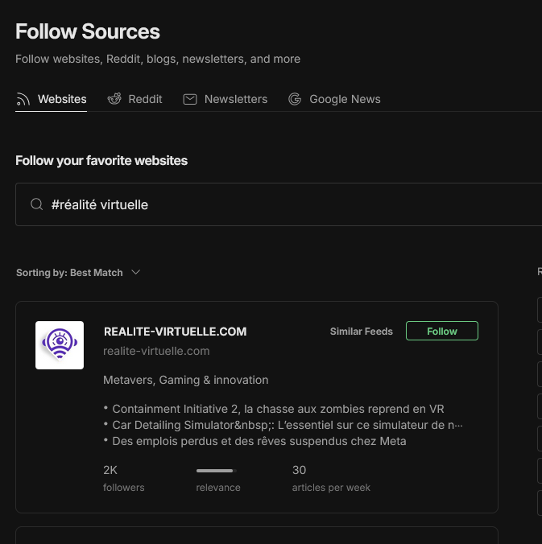
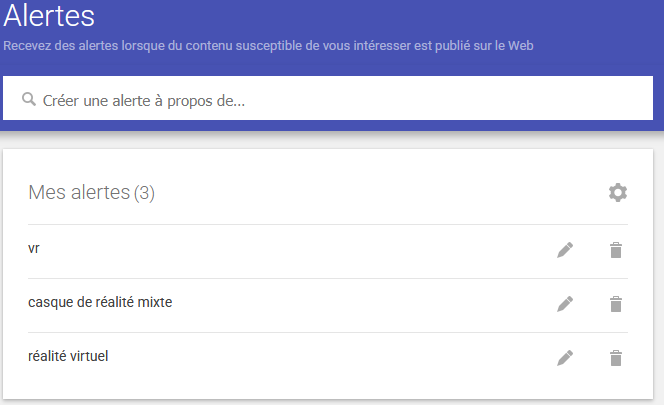

25 octobre 2023
Réalité virtuelle : qu'est-ce que c'est ?
Source La veille technologique, consiste à surveiller les évolutions techniques, les innovations dans un secteur d’activité donnée.
elle comprend notamment la surveillance, la collecte, le partage et la diffusion d’information permettant d’anticiper ou de s’informer sur des changements en matière de recherche, développement, brevet, lancement de nouveaux produits, matériaux, processus, concepts, innovation de fabrication, etc….
Cela a pour but d’évaluer l’impact sur l’environnement et l’organisation.
La réalité virtuelle
Problématique : Dans quelle mesure la réalité virtuelle transforme-t-elle les secteurs professionnels et sociaux, et quels sont les défis associés à son développement ?"
- Théme 1 : Qu'est ce que la réalité virtuelle ?
- Théme 2 : Quels sont les risques liés à l'utilisation de la réalité virtuelle ?
- Théme 3 : Tout le monde peut tirer avantage de la réalité virtuelle ?
Grâce à Feedly, j’ai pu créer différents flux d’informations. Il suffit de rechercher un mot-clé pertinent pour suivre facilement les contenus liés à ce sujet.
Grâce à Feedly, j’ai pu créer différents flux d’informations. Il suffit de rechercher un mot-clé pertinent pour suivre facilement les contenus liés à ce sujet.
